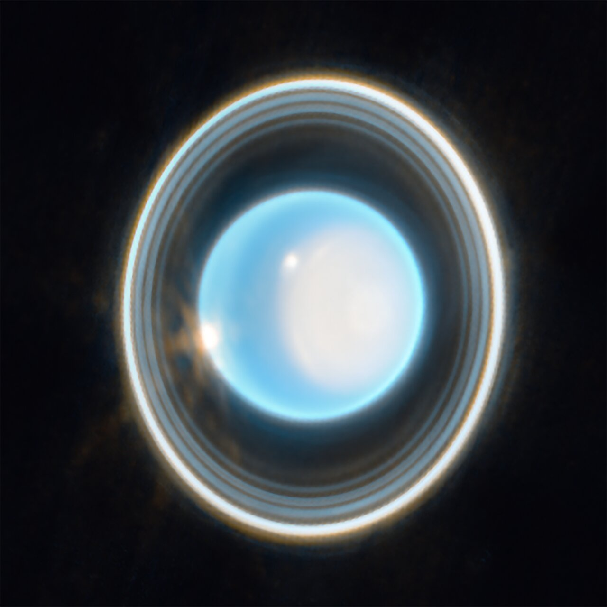

Uranus is the seventh planet from the Sun, an ice giant with a unique sideways rotation, faint rings, and a cold, windy atmosphere. It is often called the “tilted planet” because it rotates on its side, unlike any other planet in the solar system.
📌 Key Facts
- Seventh planet from the Sun
- Distance from Sun: 2.87 billion km
- Rotation(Day): 17 hours,14 minutes
- Orbital Period(Year): 84 Earth years
- Orbital Speed: 6.8 km/s
- Tilt: Axial tilt of 98°, meaning Uranus essentially rolls around the sun on its side
🔴Unique Featuures
It has atleast 27 known moons , Titania is the largest moon It has 13 faint rings,dark and narrow, discovered in 1977. Sideways rotation :Likely caused by a massive collision early in its history. Each pole experiences 42 years of continuous sunlight followed by 42 years of darkness It has pale blue-green color due to methane absorbing red light.